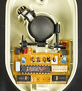

La souris, un objet pourtant aujourd'hui si banal a révolutionné le monde de l'informatique en 1968.
La souris contient une boule en contact avec le support où elle est utilisée. Deux rouleaux perpendiculaires entre eux actionnés par cette boule permettent de capter les déplacements de la souris sur le sol. Un troisième rouleau permet de stabiliser la boule. Les rouleaux sont solidaires d'un axe au bout duquel se trouve un disque perforé laissant passer la lumière d'une diode électroluminescente ou au contraire la bloquant. Une cellule photoélectrique recevant cette lumière fournit quand la souris se déplace un signal alternatif
